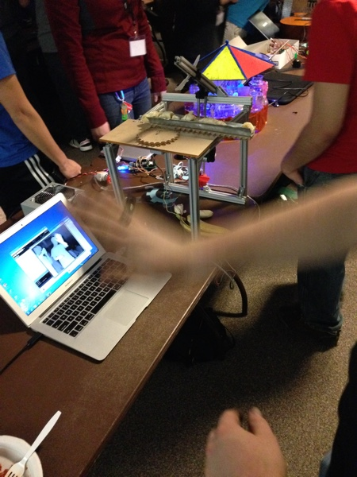
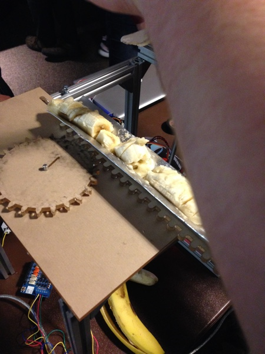

Spring 2014
MakeMIT 2014 hackathon entry which maps the movement of a users hand to the position of the plastic knife. Sharp knives are scary so we stuck with cutting bananas. It won a special award from the Microsoft judges for the innovative use of the Kinect.
 